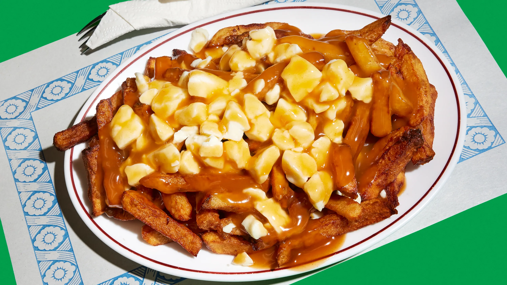

Poutine

Description
Poutine, a Canadian specialty, is simple yet satisfying: French fries topped with cheese curds and smothered in gravy.
Originally from Quebec, this dish has become a Canadian staple, often featuring unique variations with additional
toppings like pulled pork, bacon, or truffle oil for added flavor complexity.
Ingredients
- French fries (homemade or frozen)
- Cheese curds
- Brown gravy
- Salt and pepper
- Optional toppings: pulled pork, green onions, or bacon bits
Steps
- Cook the fries: Bake or deep-fry the French fries until golden and crispy.
- Prepare the gravy: Heat prepared gravy or make homemade gravy using stock, butter, and flour. Season with salt and
pepper.
- Assemble: Place fries on a plate, sprinkle cheese curds over the top, and pour hot gravy on top to melt the curds
slightly.
- Add optional toppings: If desired, add pulled pork, bacon, or green onions.
- Serve immediately: Poutine is best enjoyed hot and fresh.